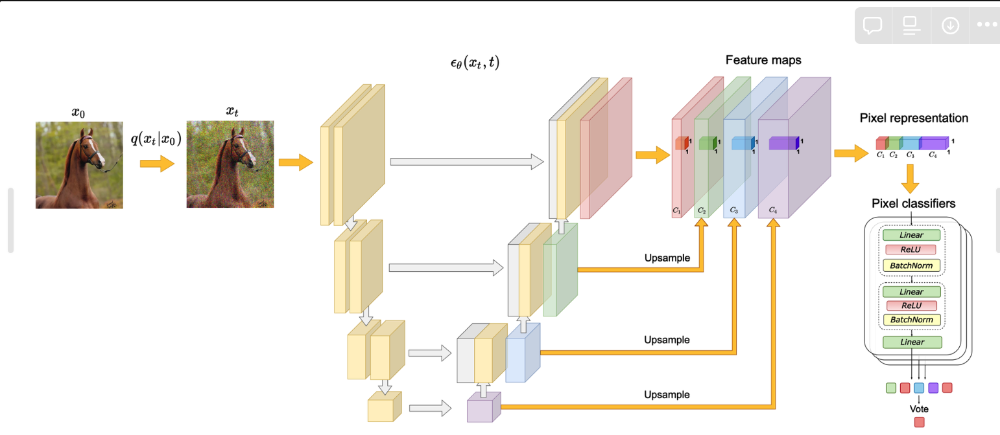
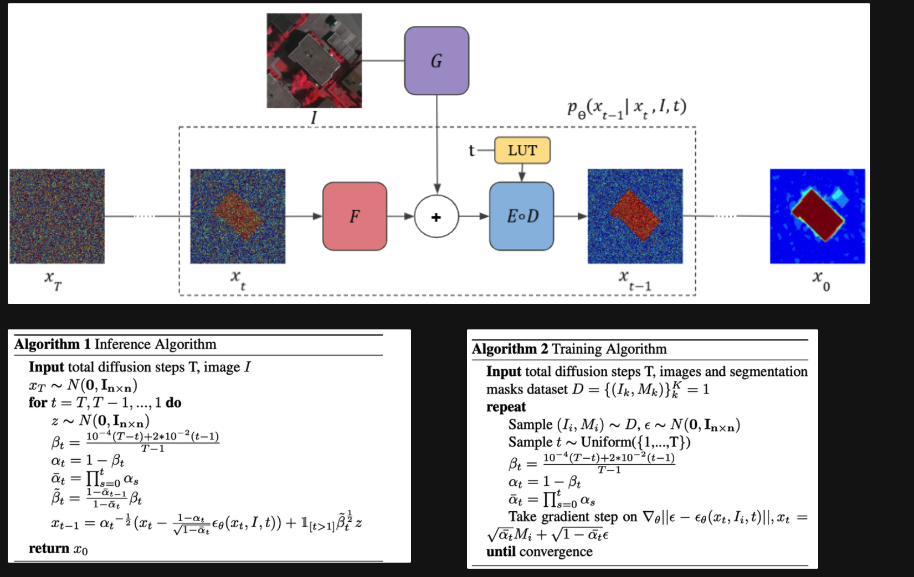
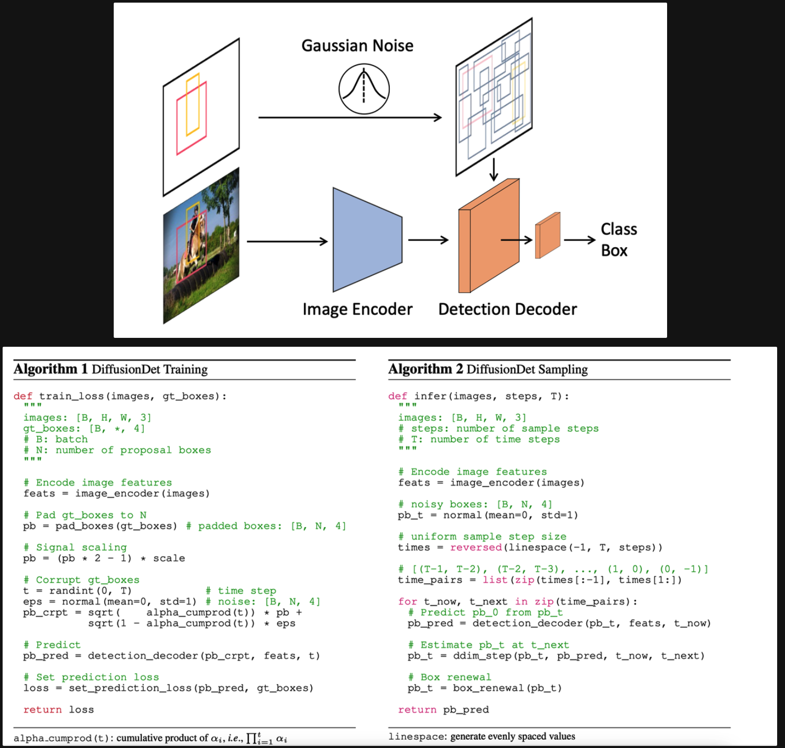
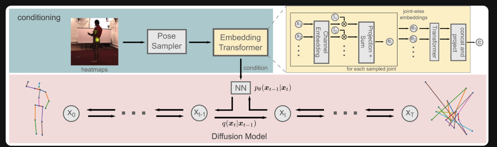
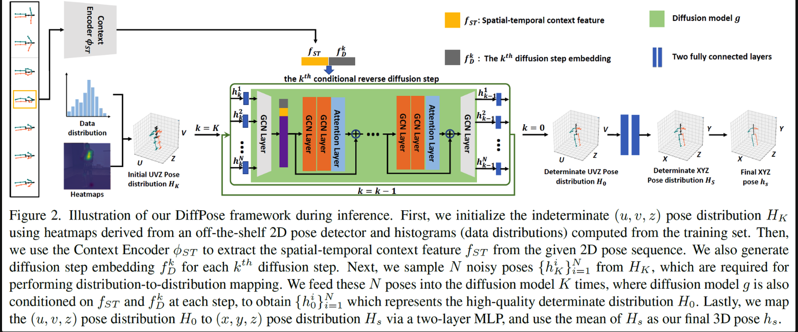

扩散模型目前看到的论文里，应用到了 目标检测、语义分割、全景分割里面，看看能不能继承到姿态估计领域，扩散模型也分好几种，根据目前学习的情况，准备应用去噪声的扩散模型。
第一次更新
DIffusion关键变量、公式、计算
DDPM有两个重要过程，前向和反向扩散；
应用扩散模型时我感觉有几个要点：
训练过程的基础与约束：
- 要么用原始的方法，从GT形式开始拟合噪声
- 这里GT形式一般是
map,比如语义分割的map；也有论文比如DiffusionDet用的GT BBOX的坐标，加上信噪比 - 然后直接用最原始的扩散模型，就拟合噪声
- 这里GT形式一般是
- 另一类范式从GT开始groudtruth
- 比如目标检测、分割 都会用一个head层来解码特征，和gt对比进行训练，我感觉这个比较适合搬过来
反向推理过程：
- 要么是用原始的方案，一步一步推理，但是具有随机性，可以多运行几次去个平均得到最终结果，这种方案显然不太好
- 另外一种是快速的非马尔可夫迭代过程的逆向过程，可以基于前一步的生成结果来生成下一步而且效果不错
现有感知任务应用算法对比
LABEL-EFFICIENT SEMANTIC SEGMENTATION WITH DIFFUSION MODELS
Training:
按照最原始的扩散模型，用生成图片的方式进行训练，没有改变（我理解是这样的），即生成高斯噪声作为GT然后训练逆向估计这些噪声
Inference：

用扩散模型估计噪声的UNet提取的特征作为学习到的图像表征，即执行前向过程，固定不同step的噪声，然后不同step加噪声会生成相应的x_t,训练一个MLP分类起得到最终的分割结果；
- 测试了不同 t 以及相应的不同深浅的Unet的block得到的图像特征
SegDiff: Image Segmentation with Diffusion Probabilistic Models 
Training:
以Ground Truth的mask作为生成基础，开始加噪声扩散；逆向的时候修改了噪声预测模型，为图中的G F D E；其他保持不变
Inference：
初始化一个噪声xt，根据输入图像和噪声开始逆向扩散，一步一步得到最终的结果；相当于就是改了原始扩散模型unet的输入、计算方式；
- 逆向扩散的时候有个噪声z是随机的，所以多次测试然后平均得到最终结果
DiffusionDet: Diffusion Model for Object Detection
<回头在看看代码>
 Training:
原始图像一次性用Encoder提取特征；采样Ground Truth的box信息；前向添加噪声进行扩散，然后对扩散结果输入到Deocder里面，Decoder中用扩散的box结果裁剪图像特征，然后一个detection head来输出最终的检测结果（分类和回归），和GT的分类回归做loss
Inference：
从高斯采样的随机box开始恢复；用DDIM进行简化渐进采样；自己的更新策略
A Generalist Framework for Panoptic Segmentation of Images and Videos

上一篇论文DiffusionDet和这篇类似，应该是继承这篇的。
训练的时候用Decoder解码真实结果；测试的时候也用了DDIM。
DiffPose: Multi-hypothesis Human Pose Estimation using Diffusion Models
用扩散模型来建模姿态估计的不确定性 
训练是按照正常的训练过程，预测噪声，有几个要点：
- 从heatmap中进行采样，生成一堆可能的，相当于建模不确定性 然后用transformer block得到特征
- 逆向去噪声过程从hrnet估计的2D heatmap开始，而不是从完全随机的噪声开始
DiffPose: Toward More Reliable 3D Pose Estimation

在姿态估计的应用
-
训练基础，按照检测这种范式，计算出最终的pose然后监督
- 回归：坐标，17个关键点
- 用多通道 Heatmap —— 做baseline来说可以从heatmap入手，基于heatmap进行迭代生成学习 （可以测试）
-
时空扩散模型
-
之前都是输入一帧，在时空姿态估计一般是输入多帧输出一帧的姿态估计结果，有个想法是维护一个序列相关性矩阵，即关键帧与每个辅助帧都进行特征相关性计算，可以作为一个丰富的时空特征来使用；（替换原来的可形变卷积融合之类的）
-
每次的17个通道的heatmap去时空特征进行索引；然后通过原始图像的Context、索引的相关性局部特征，来计算出heatmap
-
然后前向就按照上述过程训练
-
逆向的时候：从随机高斯开始，加上每帧图像的context；索引的相关性特征；迭代的一步一步输出heatmap
第二次更新
代码基于DiffusionDet实现；
- 先把扩散模型迁移过来跑通
- 扩散模型跑通了 heatmap生成这部分死活懒得写
第三次更新
- 写完是写完了 但是训练为0
-
解决训练精度为0的bug修复：
- 原始代码中对ground truth加了信噪比，以及对采样的数据做了截断，我试试删掉这两个部分（测试出不是这部分问题）
- 检查梯度似乎没有异常值
- 在forward代码中有一句赋值，这句话影响了模型学习
Bug修复，
下一步看看训练最高能到多少 [68+ Ac]
分析：扩散模型因为要从ground-truth的heatmap开始扩散，然后通过一系列操作算一个预测值再和从ground-truth的heatmap计算损失函数，这种训练似乎不是很科学，现在68左右的Acc，距离普通的姿态估计结果还差挺远 —- 要么是因为heatmap本身不宜扩散？直接从坐标开始？
基于扩散模型的后续改进需要再看看，扩散模型不一定是要做的，现在还在探索尝试阶段
12-8 新的思路：
鉴于当前基于Heatmap扩散的模型精度不高（68），准备进行以下尝试：
- 基于坐标直接进行扩散，作为一个baseline模型（这里可以考虑用Transformer架构），看看效果
- 结合坐标和Heatmap：在坐标扩散的过程中，对于每个Step，加入Heatmap进行引导修正
- 结合坐标和Heatmap：双流扩散模型，扩散过程中互相交互，融合坐标信息以及heatmap信息
2022-12-8，杨总贡献！
12-13 更新思考：
论文《DiffPose: Toward More Reliable 3D Pose Estimation》启发，目前扩散模型可能可以改进的点：
- 时间编码那块，变成一个attention 估计有问题，可以试试把时间编码的tensor 和 image feature cat在一起，然后再学习
- 扩散基础，基于backbone的结果进行扩散，而不是从0开始扩散，给一个好的初始化作为基础，重点放在怎么结合temporal和diffusion (cycle)
- 扩散模型中生成噪声的，随机采样可以换成 高斯混合分布采样
- 扩散模型的训练部分可操作空间较大
12-15 继续整理思路
- 采样姿态是必须要做的，用多个姿态进行扩散，建模不确定性，所以这块要解决一下姿态采样问题
- 扩散基础也是必须要改，基于Backbone结果进行采样多个，再进行逆向会比较好
- 把时间编码的tensor直接cat起来会好点**（已实现）待会儿再试试放开HRNet一起train的一个版本 [精度低，先排除一下实现方式问题 我试试把原始精度高的版本的推理也抽象成方法]**
- Temporal + Diffusion，为了学习时间一致性，进一步进行约束：
- 进行cross frame的扩散过程：current frame 的pose + 邻近frame的feature来扩散生成临近frame的pose；同理从临近的frame扩散到current frame，类似一个cycle的过程
- 训练过程我觉得可以先不用改 就用目前的，先不需要改成学习噪声的
- Backbone替换以及冻结问题，有待考虑，先用冻结的版本看看
还有一个猜想是 直接回归heatmap 因为这个没有什么明确的语义，所以扩散模型学习起来难度比较大，借鉴binary mask的思路学习一个类似的mask能否帮助最终的关键点定位 也是有待考虑的一件事
12-22梳理和计划
做实验发现通过多次随机初始化进行扩散，可以提高精度（80），已经到了一个可接受level的baseline，接下来就是进行改进，因为还是有很大的可操作空间，梳理一下改进思路
先复现之前最好的68精度，这样应该就可以达到82mAP了 （应该是误差，这条可以忽略）- 调整信噪比scale和heatmap约束的scale，看看对精度的影响
- 在模型设计中引入可形变卷积（CNN体系）
- 用HRNet提取特征，设计transformer结构来处理后续扩散过程
- 放开HRNet一起训练
- 修改backbone，用vitpose作为backbone提取特征，用transformer结构进行学习处理
- 引入高阶的时序设计
就是比如处理多帧的时候，会把多帧的patch叠在一起，然后比如用一个block算完attention特征维度是很大的，做下游任务是直接把这么大维度的resize成二维的feature然后用Head么还是其他的
[10, 192, 1280] → [10,1280,16,12] → [10,1280,64,48] → [10,17,64,48]
[10, 192*3, 1280] → [10,3840,16,12] → [10,3840,64,48] → [10,17,64,48]
Transposeconv()
3840→1280→vithead
[B, patch, Channel] | 192_3 → 192_3 |1280
[10, 192*3, 1280] → [10,17,192]
cat [patch_embedding,pose_embedding]
Input: patch_embedding + pose_embedding
ourput: patch_embedding + pose_embedding
MLP(pose_embedding)
1-7最新进展
- 用ViT作为Backbone提取特征，transformer结构进行多帧特征融合
- 扩散从heatmap和时空特征进行学习
- 精度83.8 w/o tricks
2-2对最新模型进行总结：
- 用Transformer聚合多帧特征的时候，直接交互数据维度，把帧数（或是对应的patch embedding数）放到最后一维，用Linear层进行聚合即可
- 多尺度**<heatmap_diffusion, Transformer>**特征交互,Transformer分辨率太低，所以尝试上采样两次得到一共三组特征分别进行交互
- 特征交互的时候直接cat 扩散的heatmap与Transformer特征会出现性能严重下降，需要以heatmap作为mask进行特征索引，然后进行交互，相当于是迭代搜索优化逐关节的特征
但是需回答一个问题，为什么是扩散模型？
Novelty：
- 现有扩散模型都是基于静止图像的，我们首次把扩散模型用到了视频姿态估计
提出一个基于时空特征的多尺度特征交互模块，以噪声为引导，建模多分辨率下噪声和时空特征的交互。- 我们demonstrate基于所提的多尺度特征交互模块，扩散模型可以迭代地搜索并优化关键点区域表征，有利于屏蔽干扰，对于姿态估计任务很有利 -已经得到验证
- 在多个数据集SOTA，并且已开源
—
如何验证扩散模型可以迭代学习关键点区域表征？
- 跑验证，把步长设置大， 看看不同步长下模型学习的表征变化 若可以迭代变化就是一个好的兆头
- 不同初始化的互补性姿态验证